Estudo interno · Marca Digital · DaviGravação 02/10/2026 · 22 s · 1916 x 906
Conselho Head (Head Academy), panorama do sistema visual
Leitura da página de vendas a partir da gravação de rolagem. Cores medidas no pixel dos quadros originais, tamanhos medidos pela altura de caixa alta no viewport de 1916 px. Material de estudo, não referência de cópia da marca.
Cores-basePreto, off-white, violeta, lima
Acentos de capítuloVerde feltro, dourado, violeta noite
Voz tipográficaGrotesca pesada, caixa alta, tracking negativo
Assinatura3D metafórico + stickers flutuantes
01 / Paleta
Quatro cores fazem o trabalho, as outras são cenário
HEX tirado da cor modal de uma caixa de pixels em cada superfície (função de amostragem em canvas sobre os quadros 1916 px). Proporção estimada classificando todos os pixels dos 19 quadros distintos pela cor mais próxima. Como os quadros são por tempo de rolagem, seções pinadas (o túnel) pesam mais do que pesariam por área.
Leitura: o lima ocupa só 2% da área e mesmo assim é a cor que a memória guarda. É a regra 60/30/10 levada ao extremo, com 2 em vez de 10. Contrastes medidos: lima sobre preto 16,8:1, off-white sobre violeta 7,2:1, lima sobre violeta 7,0:1. Violeta e lima têm luminância parecida, por isso convivem sem um apagar o outro.
02 / Tipografia
Grotesca pesada para gritar, condensada para catalogar
Famílias identificadas por desenho de letra (Q, G, a, g, ç, numerais). Sem acesso ao CSS, o grau de certeza vai indicado. Amostras ao lado renderizadas com a candidata para comparar com o recorte.
Display · headlines
Direção.
Plus Jakarta Sans 800 (alternativas: Satoshi, General Sans). Caixa alta, tracking muito negativo. Versão 300 nos degraus ("Freelancer").
Corpo · interface
Corpo
DM Sans 400 a 700. g de um andar, ç e acentos geométricos, botões e listas.
~44 a 52 px · 700 a 800 · caixa mista citações, "Funil & Primeira Monetização"
Título de item
O Conselho Head é mais um curso?
22 a 26 px · 500 a 600 · lh 1,2 FAQ, lista de benefícios
Corpo
Aqui você não recebe uma rota genérica.
17 a 18 px · 400 · lh ~1,55 (27 a 28 px) #6D6D69 s/ claro · #B9B9B6 s/ escuro medida ~330 a 770 px
Eyebrow A
Informação não é o mesmo que direção.
~13 px · 700 · caixa alta tracking ~0,12em · acima de headline
Eyebrow B
02 / Direção · Degrau / 01
~13 px · condensada · tracking 0,14 a 0,2em numeração de capítulo, lima no túnel
Botão
Quero entrar para o conselho
~12 a 13 px · 600 a 700 · caixa alta tracking quase zero
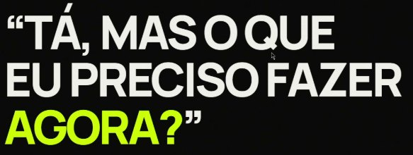
Display XL. Três linhas, a última muda de cor. A aspa vira elemento gráfico.
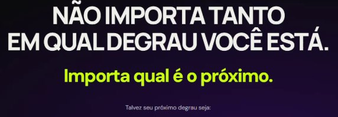
Pergunta e resposta. Caixa alta em off-white, resposta em caixa mista lima menor.
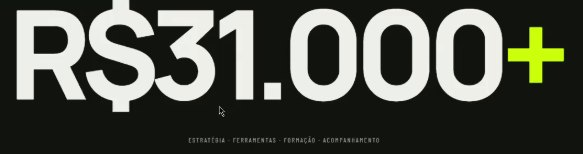
Numeral. Família diferente da headline: mais estreita, mais "placar".
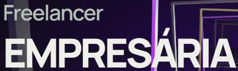
Contraste de peso. 300 em cinza (onde está) contra 800 em off-white (onde vai).
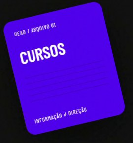
Condensada nos cards de arquivo.
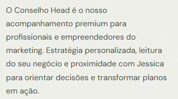
Corpo DM Sans, cinza médio, medida estreita.
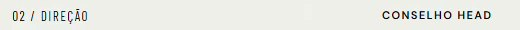
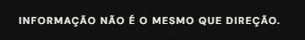
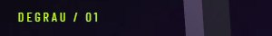
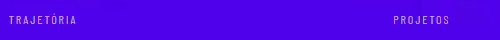
Dois sistemas de eyebrow na mesma linha: condensada numerada à esquerda, sans bold à direita.
03 / Grid e espaço
Um container largo, quatro margens diferentes
Medidas no viewport gravado (1916 px de largura, escala 1:1). O conteúdo vive num container de ~1700 px, mas a margem esquerda muda de seção para seção.
93 px · hero, depoimentos
112 · 03, 04, mesa
150 · manifesto, FAQ, CTA
170 · degraus, valor
482 · coluna de texto da seção 02
1802
texto 520 a 770 px
mídia 900 a 1000 px
Container~1690 a 1730 px
Depoimentos: 3 cards de 561 px com gap de 23 px. Mesa: 4 colunas de ~404 px com gap de 24 px. Equivale a 12 colunas com calha de 24 px.
AlinhamentoDuas lógicas
Telas manifesto centralizadas, de altura cheia (cursos, "Talvez", degrau, evolução, valor). Seções de explicação em 2 colunas assimétricas, texto à esquerda e mídia à direita, com respiro de 90 a 150 px.
Ritmo vertical~100 a 110 px
Respiro interno de seção (5,5vw). Eyebrow a headline ~40 px, headline a corpo ~60 px. Itens de lista com 116 px de passo. Manifestos ocupam a tela inteira (~906 px).
A seção 02 usa uma terceira lógica: rótulo numerado numa coluna estreita à esquerda (112 px) e conteúdo começando em 482 px, como página de revista. É o momento mais editorial da página e o mais elegante do grid.
04 / Ritmo de seções
Capítulos por cor: escuro para provocar, claro para explicar
Sequência de fundos de cima para baixo, com largura proporcional ao tempo que cada trecho ocupou na rolagem gravada.
1
2
3
4
5
6
7
8
9 túnel
10
11
12
13
14
15
16
17
18
19
1 Hero, foto + card inclinadopreto · 2 col
2 Marquee de palavraslima · faixa 80 px
3 Depoimentos em carrosseloff-white · 3 cards
4 "Você já fez cursos" + arquivosgrafite · centralizado
5 "Talvez o que esteja te travando"grafite · manifesto
6 "Tá, mas o que eu preciso fazer"preto · manifesto à esquerda
7 02 Direção, o que é a ofertaoff-white · editorial
8 "Não importa o degrau"preto para violeta radial
9 Túnel 3D, degraus 01 a 08violeta noite · pinado
10 "Ele começa com direção"violeta · faixa
11 03 O que é, tabuleirooff-white · 2 col
12 04 Seu acesso, 10 entregasoff-white · foto + lista
Padrão: o escuro carrega a dor e a provocação (manifestos), o claro carrega a explicação (o que é, o que recebe), o violeta marca as viradas (direção, autoridade). Verde e violeta noite são cenários de uma seção só, funcionam como "salas" diferentes da mesma casa.
05 / Componentes
Poucas peças, sempre com uma assinatura física
Medidas em px do viewport gravado. Raios e sombras estimados pelo recorte.
Cards em órbita. Cinco cards nos cantos em violeta, off-white e lima enquadram a headline central. Funcionam como pilha de material acumulado.
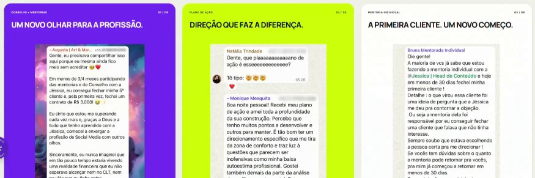
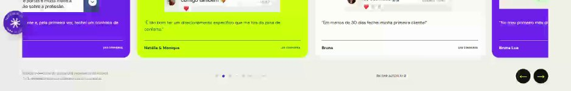
Card de depoimento
Medidas
561 px de largura, gap 23 px, 3 visíveis
Raio
~22 px; branco com borda 1 px clara, sem sombra
Cores
Alterna #6C1FEB, #CBFF0A e #FDFDFD
Anatomia
Rótulo + contador "01 / 08", título caixa alta ~24 px, print de WhatsApp como prova, citação curta, divisor 1 px, nome + "LER CONVERSA"
Navegação
Pontos, "pausar autoplay", setas pretas circulares 48 px com seta lima
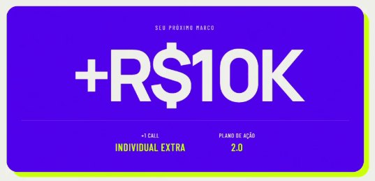
Selo de número
Medidas
866 x 409 px, raio ~28 px
Sombra
Sólida lima deslocada ~12 px para baixo e direita, sem desfoque
Anatomia
Eyebrow espaçada "SEU PRÓXIMO MARCO", numeral ~180 px, divisor 1 px translúcido, dois dados em condensada (rótulo branco, valor lima)
Variante
Números da fundadora em grade 2 x 2 com divisores, ~60 px bold e rótulo condensado 11 px
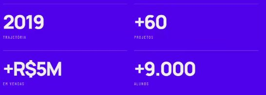
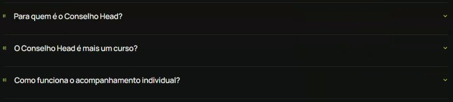
FAQ
Linha
Passo de 116 px, divisor 1 px ~rgba(255,255,255,.1)
Número
Condensada ~12 px em lima, alinhada à esquerda (151 px)
Pergunta
~26 px, 500, caixa mista, off-white
Ícone
Chevron lima à direita, sem caixa
Título
"Ainda tem alguma dúvida?" alinhado à direita, segunda linha lima
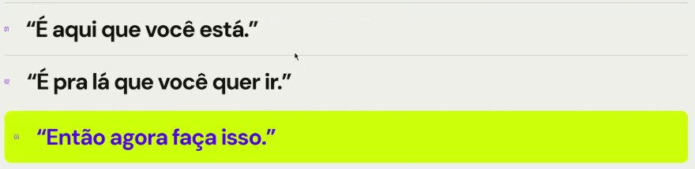
Lista de frases com destaque
Linha
~120 px, divisor 1 px escuro, número violeta 12 px
Texto
~52 px, 800, caixa mista, entre aspas
Ativo
Fundo lima, raio ~12 px, texto violeta; resolve a sequência
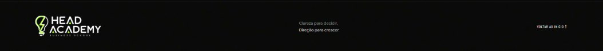
Rodapé
Altura
~160 px, borda superior 1 px
Anatomia
Logo à esquerda, assinatura em duas linhas no centro ("Clareza para decidir." cinza, "Direção para crescer." branco), "VOLTAR AO INÍCIO ↑" condensado à direita
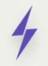
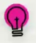
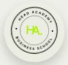
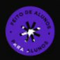
Stickers flutuantes
Peças
Raio violeta 3D, lâmpada magenta (ícone da marca), selo circular "HA business school", badge rotativo "feito de alunos para alunos"
Posição
Presos às laterais (~20 a 90 px da borda), trocam de lado entre seções
Sombra
Suave e larga, dão volume de objeto
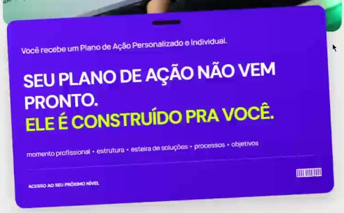
Card crachá. Violeta, inclinado ~2°, furo de crachá no topo, código de barras, sobreposto à foto.
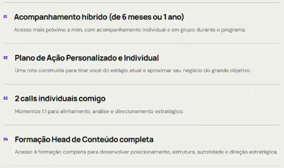
Lista de entregas. Número violeta 11 px, título 22 px, descrição 15 px cinza, divisor 1 px.
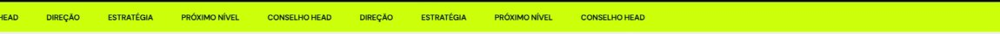
Marquee. Faixa lima de 80 px, palavras-chave em caixa alta 16 px bold, espaçamento ~55 px.
06 / Linguagem 3D e imagem
Cada objeto 3D é uma metáfora literal da oferta
Degrau vira túnel, plano vira tabuleiro, grupo vira mesa. A fotografia faz o contrário: puxa para o pessoal e para a atitude.
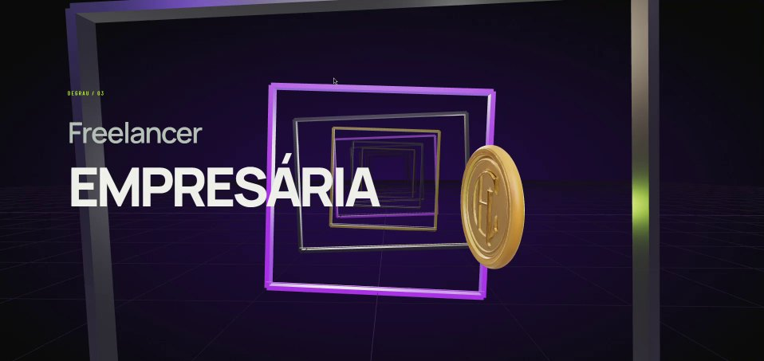
Túnel com moeda.
Molduras quadradas extrudadas e aninhadas em recursão: metal grafite, lilás neon emissivo e dourado.
Piso em grade de perspectiva (synthwave) em violeta, névoa escurecendo as bordas.
Câmera frontal central, eixo girado 2° a 4°, avança em Z com a rolagem.
Moeda dourada com monograma, PBR metálico, gira em Y. Pilar com brilho lima como luz de recorte.
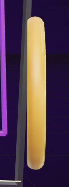
Moeda de perfil (degrau 01)
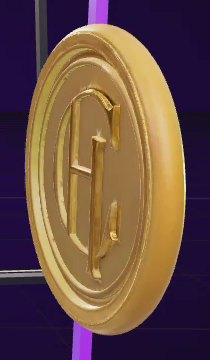
Moeda de frente (degrau 03)
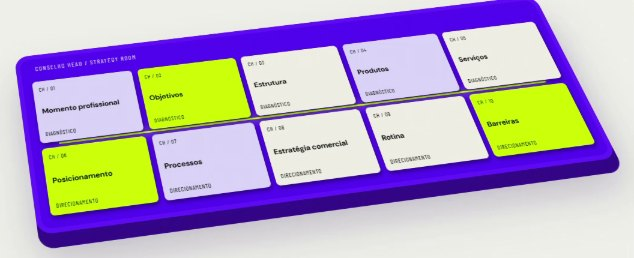
Tabuleiro isométrico. Placa violeta com chanfro grosso e borda mais escura, câmera 3/4 de cima (~30°) com perspectiva leve. Cartas planas lavanda, lima e off-white, luz difusa de estúdio, sombra de contato larga e suave sobre o off-white.
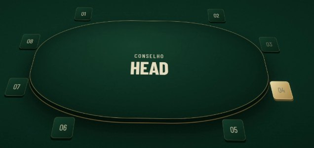
Mesa do conselho. Mesa oval de feltro verde com filete dourado, vista 3/4 de cima. Oito fichas numeradas em itálico condensado, a ativa em dourado. Spot central suave, vinheta escura e grão. Clima de mesa de jogo e sala de diretoria.
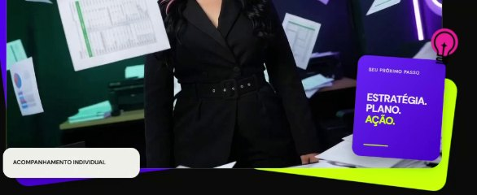
Hero. Escritório, papéis no ar, neon verde e violeta como luz de recorte.
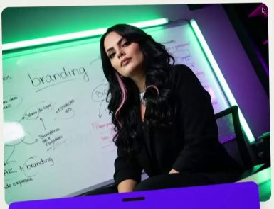
Benefícios. Quadro com "branding" escrito à mão, mesma luz neon.
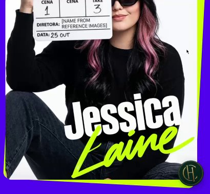
Autoridade. Fundo branco recortado, claquete, nome em lettering condensado + script lima.
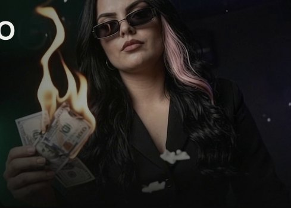
CTA. Óculos escuros, dinheiro em chamas em vídeo. Pretos profundos, alto contraste.
Ponto comum: pretos esmagados, luz colorida de recorte (neon verde e violeta) e personagem sempre de preto. A fotografia já vem na paleta, por isso não briga com o layout. O 3D é limpo, sem texturas sujas, mais próximo de Spline ou Three.js do que de render fotorrealista.
07 / Motion
A rolagem é o controle remoto
Quase tudo é amarrado ao scroll (scrub). Durações de animações por tempo são estimadas pela gravação a 1 quadro por segundo e por isso têm margem larga.
Elemento
O que acontece
Gatilho
Duração
Easing
Marquee
Palavras correm na horizontal em loop
sempre
~30 a 40 s/ciclo
linear
Carrossel de depoimentos
Desliza um card; controle de pausa exposto
autoplay + setas
~600 ms, a cada ~5 s
ease-out
Cards de arquivo
Sobem mais rápido que o texto (texto 38 px, cards ~50 px no mesmo trecho), leve giro
scroll
scrub
linear
Headlines manifesto
Entrada por linha, opacidade e subida curta
entrar na tela
~600 a 800 ms
ease-out expo
Fundo radial violeta
Gradiente nasce de baixo antes do túnel, preto vira violeta
scroll
scrub
linear
Túnel 3D
Seção pinada; câmera atravessa molduras, degrau 01 a 08 troca texto, moeda gira de perfil para frente
scroll
~4 telas de rolagem
scrub suavizado
Tabuleiro
Cartas espalhadas e giradas deslizam até a grade 5 x 2
scroll
~1,5 tela
scrub
Mesa
Ficha ativa avança 01 a 08, fica dourada, título "Fase n/8" troca, item da lista ganha filete
scroll ou autoplay
~400 ms por troca
ease-in-out
Escada "Novo nível"
Quatro linhas escurecem em sequência e a última fica violeta
scroll
scrub
linear
Stickers laterais
Flutuação vertical, badge gira, aparecem e trocam de lado por seção
sempre + seção
~3 a 6 s/loop
ease-in-out
CTA final
Vídeo em loop de dinheiro queimando, cinzas no ar
sempre
loop
n/a
Cards de arquivo em parallax2 s → 3 s
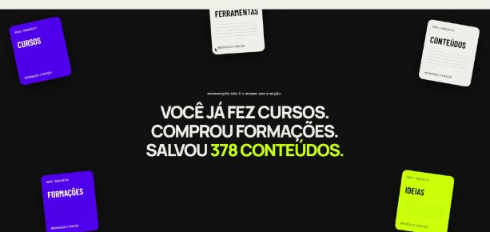
→
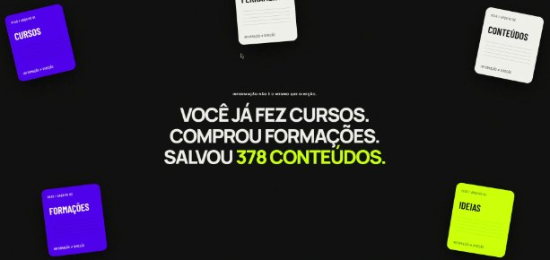
Entrada do túnel6 s → 10,5 s
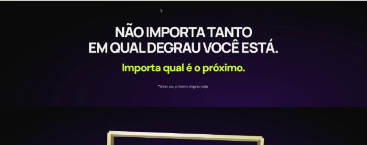
→
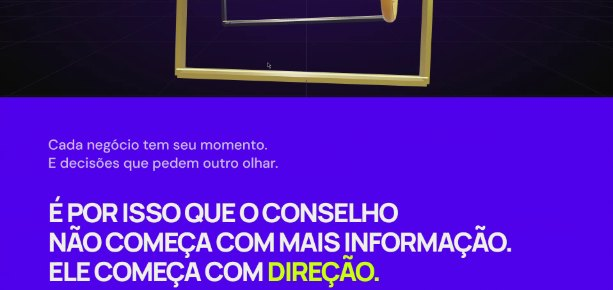
Túnel: degraus 01, 03, 05 e 087 s → 10 s
Tabuleiro montando o plano11 s → 11,5 s → 12 s
→
→
Escada de cor por linha15,5 s
Vídeo do CTA18 s → 21,8 s
→
08 / Leitura crítica
Funciona pela disciplina de cor, tropeça no acúmulo
O que faz funcionar
Lima escasso. 2% da área, sempre na palavra que importa ou no botão. O olho aprende rápido que lima é "aqui".
Voz de manifesto. Caixa alta pesada com tracking negativo e última linha em outra cor cria cadência de pergunta e resposta.
Capítulos por fundo. Escuro provoca, claro explica, violeta vira a chave. Dá para saber em que parte da história se está sem ler.
Metáfora visível. Túnel, tabuleiro e mesa transformam "mentoria" em objetos que se entendem em um segundo.
Prova crua. Prints reais de conversa dentro de cards limpos: o contraste entre bruto e polido aumenta a credibilidade.
Sistema de dossiê. Numeração "02 / DIREÇÃO", "CH / 04", "ARQUIVO 01" dá sensação de método.
Onde falha
Grid sem dono. Margem esquerda em 93, 112, 150 e 170 px. Na rolagem, o texto "pula" de posição.
Cores duplicadas. Quatro pretos (#0A0A0A, #111111, #131112, #11130E) e dois violetas (#5001EB, #6C1FEB) sem papel distinto.
Legibilidade no limite. Escada "Novo nível" começa em 1,8:1. Texto sobre o 3D cruza molduras ("EMPRESÁRIA"). Rótulos condensados de 10 a 11 px em cinza.
Excesso de cenário. Verde e dourado abrem uma terceira paleta; quatro tipos de sticker disputam a margem; túnel longo adia a oferta.
CTA disperso. "Quero entrar para o conselho", "Quero aprender com ela", "Conversar sobre o conselho": três promessas para uma ação.
Peso. Três cenas 3D, vídeo e carrossel em autoplay cobram caro no celular e na primeira carga.
O que levar para os nossos projetos
A lição transferível é a economia: duas cores de fundo, uma de virada e uma de ação usada com avareza. Grid único com uma margem só, CTA único com um rótulo só, e no máximo uma cena "uau" por página, colocada onde ela explica a oferta e não onde atrasa.